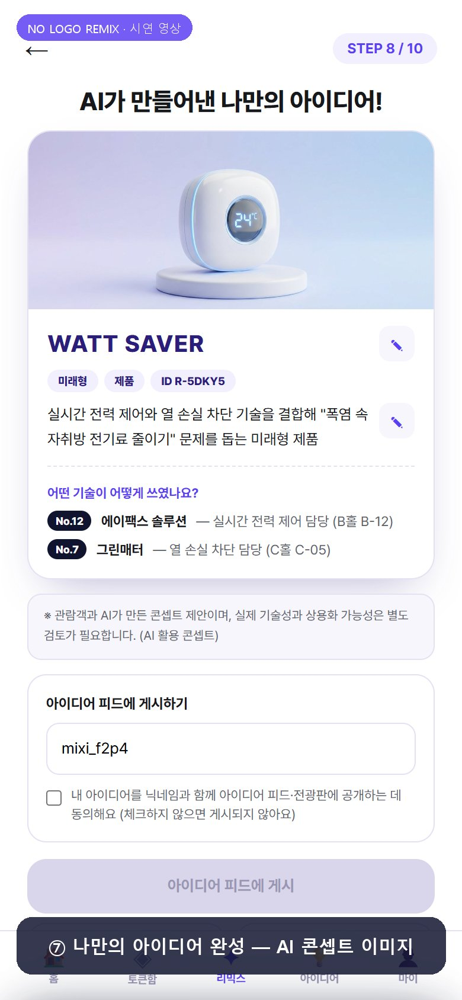

브랜드를 가린 기술을 고르고 부스를 찾아가 AI로 아이디어를 만들어 공유하는 참여형 팝업을 중심으로, 전시 전 SNS 티저와 전시 후 관람객 공유 콘텐츠 확산으로 2030 유입을 만들고, 참여 데이터를 기업용 관심 데이터 리포트로 돌려주는 마케팅 전략입니다.
부스마다 기업 이름과 로고가 먼저 눈에 들어오고, 익숙하지 않은 브랜드는 지나치게 됩니다. 규모가 작은 기업의 기술은 좋아도 눈에 띄지 않고 — 2030의 관심은 데이터로 잡히지도 않습니다.
이만한 시장인데도 참관객 통계는 국적·바이어 여부 중심 — 2030 세대의 관심은 집계되지 않습니다.
성인 방문 경험률 81.4%, 흐름을 주도하는 것은 2030(20대 인지도 71.2%). 73.0%가 '오래 머물고 싶은 체험형 공간' 확대를 원합니다.
2026 서울국제불교박람회 — 체험형 콘텐츠로 나흘간 25만 명, 사전등록 3년 만에 약 4배. 유입을 만든 건 장르가 아니라 '참여 역할'이었습니다.
문제는 전시회 자체가 아니라,
2030이 참여할 '역할'이 없다는 데 있다.
전시장 중앙 공용 팝업 — 기업명·로고 없이 "이 기술이 어떤 문제를 해결하는가"만 보고 고릅니다.
"내가 브랜드도 모르고 이 기술을 골랐다"는 발견 — 자연스럽게 그 부스로 향하게 됩니다.
직원 설명·체험 후 QR 인증. 방문 확인에서 끝나지 않고 토큰이 AI 창작의 재료가 됩니다.
서로 다른 기업의 토큰 2~3개를 "폭염 속 자취방 전기료를 줄여라" 같은 생활 미션에 조합 — 아이디어명·한 줄 설명·콘셉트 이미지가 1분 내외로 완성됩니다.
결과물이 중앙 전광판에 노출되고, 현장 투표·전문가 평가로 우수 아이디어와 참여기업을 선정합니다.

수동적으로 듣는 대신 기술을 직접 선택·조합해 자신만의 아이디어를 만듭니다. 전광판 노출·SNS 공유가 "알리고 싶은 동기"가 되고, 우수 아이디어 참가자는 별도 동의를 거쳐 채용 상담·인턴십으로 연결됩니다.
부스 규모·인지도와 무관하게 기술력만으로 2030의 첫 평가를 받습니다. 특히 중소기업에게는 발견의 무대 — 축적된 관심 데이터는 잠재 고객·인재 발굴과 신제품 기획의 참고 자료가 됩니다.
활용도 낮던 부대행사 공간이 전시 전체의 참여 허브로. 체험 격차 완화, 순환·체류 증가, 그리고 기술카드·템플릿·마스코트 자산의 재사용. 송도 개최 전시라면 지역 관광 마케팅 연계까지.
파일럿 1차 목표: 기술 선택자의 절반 이상이 실제 부스 방문으로 이어지는 것. 방문 인증형 장치의 효과는 공공 사례로 확인된 바 있습니다(서울교통공사 모바일 스탬프투어 — 이용객 2만여 명 증대, 응답자 87% 만족 [기획서 주4]). 본 기획은 인증에서 멈추지 않고 창작·공유를 더해 그 효과를 증폭합니다.